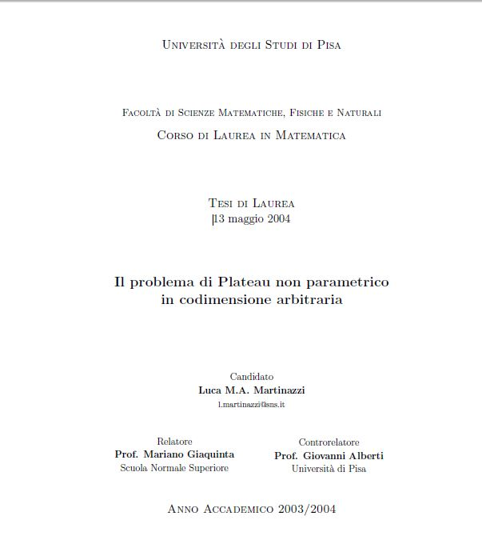
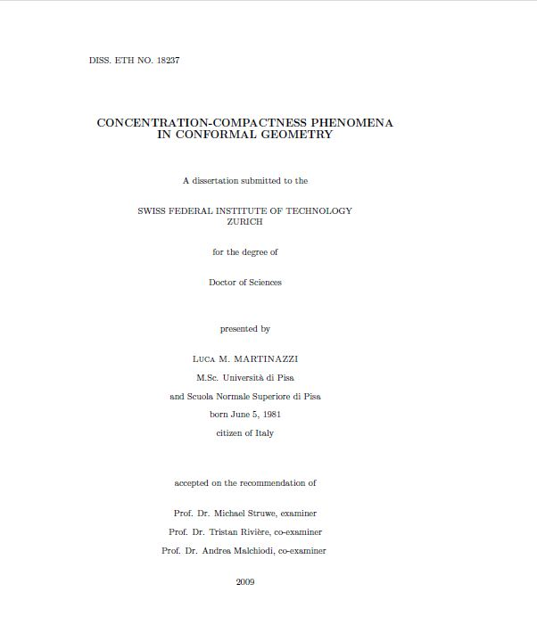

 |
Il problema di Plateau non parametrico in codimensione arbitraria
Master Thesis, Pisa, May 2004.
Italian, English, Università di Pisa.
|
 |
Concentration-compactness phenomena in conformal geometry
Ph.D. Thesis, Zurich, March 2009.
Download, ETH library
|
|
|
An introduction to the regularity theory for elliptic systems, harmonic maps and minimal graphs, 2nd Edition
with M. Giaquinta. Edizioni della Normale, Pisa 2012 (1st edition, 2005). Preview.
Price: around 25EUR/30USD. Buy here |
|